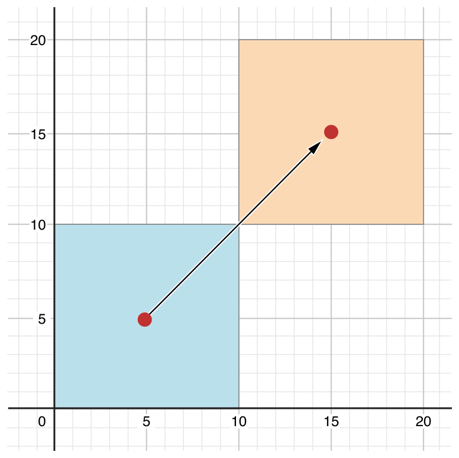

Las clases y las estructuras en Swift tienen muchas cosas en común. Ambos pueden:
Las clases tienen características adicionales que no tienen las estructuras:
class UnaClase {
// definición de clase
}
struct UnaEstructura {
// definición de una estructura
}struct CoordsPantalla {
var posX = 0
var posY = 0
}
class Ventana {
var esquina = CoordsPantalla()
var altura = 0
var anchura = 0
var visible = true
var etiqueta: String?
}var unasCoordsPantalla = CoordsPantalla()
var unaVentana = Ventana()unasCoordsPantalla los valores a los
que se han inicializado sus propiedades son:unasCoordsPantalla.posX // 0
unasCoordsPantalla.posY // 0unaVentana son:unaVentana.esquina // CoordsPantalla con posX = 0 y posY = 0
unaVentana.altura // 0
unaVentana.anchura // 0
unaVentana.visible // true
unaVentana.etiqueta // nil// Accedemos a la propiedad
unasCoordsPantalla.posX // Devuelve 0
// Actualizamos la propiedad
unasCoordsPantalla.posX = 100
unaVentana.esquina.posY = 100Si en las estructuras no se se definen inicializadores explícitos (veremos más adelante cómo hacerlo) podemos utilizar un inicializador memberwise en el que podemos proporcionar valores de sus propiedades.
En las clases no existen los inicializadores memberwise, sólo en las estructuras.
let coords = CoordsPantalla(posX: 200, posY: 400)let coords1 = CoordsPantalla(posX: 200)
print(coords1.posX, coords1.posY)
// Imprime 200 0var coords1 = CoordsPantalla(posX: 600, posY: 600)
var coords2 = coords1
coords2.posX = 1000
coords1.posX // devuelve 600var ventana1 = Ventana()
ventana1.esquina = coords1
ventana1.altura = 800
ventana1.anchura = 800
ventana1.etiqueta = "Finder"
var ventana2 = ventana1
ventana2.anchura = 1000
ventana1.anchura // devuelve 1000Debido a que son tipos de referencia, ventana1 y
ventan2 se refieren a la misma instancia de
Ventana.
Una constante o variable en Swift que se refiere a una instancia de un tipo referencia es similar a un puntero en C, pero no es un puntero que apunta a una dirección de memoria y no requiere que se escriba un asterisco (*) para indicar que estas creando una referencia. En su lugar, estas referencias se definen como cualquier otra constante o variable en Swift.
letLas estructuras y clases también tienen comportamientos distintos
cuando se declaran las variables con let.
Si definimos con let una instancia de una estructura estamos
declarando constante la variable y todas las propiedades de la
instancia. No podremos modificar ninguna:
let coords3 = CoordsPantalla(posX: 400, posY: 400)
coords3.posX = 800
// error: cannot assign to property: 'coords3' is a 'let' constantlet una instancia de una clase sólo estamos
declarando constante la variable. No podremos reasignarla, pero sí que
podremos modificar las propiedades de la instancia referenciada por la
variable:let ventana3 = Ventana()
// Sí que podemos modificar una propiedad de la instancia:
ventana3.etiqueta = "Listado"
// Pero no podemos reasignar la variable:
ventana3 = ventana1
// error: cannot assign to value: 'ventana3' is a 'let' constant===) !==)ventana1 === ventana2 // devuelve true
ventana1 === ventana3 // devuelve falseEn Swift los parámetros de las funciones son constantes, se definen
usando el operador let. Esto hace que sea muy distinto el
comportamiento de un parámetro dependiendo de si es una estructura o
una clase.
Si la instancia que se pasa como parámetro a una función es una estructura su contenido no se podrá modificar. Sin embargo, si lo que se pasa es una instancia de una clase, podremos modificar su contenido.
Un ejemplo típico de programación imperativa o procedural, en la que
se modifica el contenido del parámetro pasado. Podemos hacerlo
porque ventana es una clase.
func mueve(ventana: Ventana, incX: Int, incY: Int) {
var nuevaPos = CoordsPantalla()
nuevaPos.posX = ventana.esquina.posX + incX
nuevaPos.posY = ventana.esquina.posY + incY
ventana.esquina = nuevaPos
}
var ventana1 = Ventana()
mueve(ventana: ventana1, incX: 500, incY: 500)
print(ventana1.esquina)
// Imprime: CoordsPantalla(posX: 500, posY: 500)coordsPantalla es una
constante y no puede ser modificado:// ¡¡CÓDIGO ERRÓNEO!!
func mueve(coordsPantalla: CoordsPantalla, incX: Int, incY: Int) {
coordsPantalla.posX = coordsPantalla.posX + incX
coordsPantalla.posY = coordsPantalla.posY + incY
}
// error: cannot assign to property: 'coordsPantalla' is a 'let' constantfunc mueve(coordsPantalla: CoordsPantalla, incX: Int, incY: Int) -> CoordsPantalla {
var nuevaCoord = CoordsPantalla()
nuevaCoord.posX = coordsPantalla.posX + incX
nuevaCoord.posY = coordsPantalla.posY + incY
return nuevaCoord
}
let coord1 = CoordsPantalla()
let coord2 = mueve(coordsPantalla: coord1, incX: 100, incY: 100)
print(coord2)
// Imprime CoordsPantalla(posX: 100, posY: 100)func mueve(ventana: Ventana, incX: Int, incY: Int) {
ventana.esquina = mueve(coordsPantalla: ventana.esquina,
incX: incX, incY: incY)
}Nota
Igual que en C, en Swift hay una forma de pasar como referencia una
estructura. Hay que utilizar el operador inout precediendo el
nombre del parámetro. Puedes encontrar más información en la
documentación oficial de Swift. Busca el apartado In-Out
paremeters en la página sobre
Funciones.
struct RangoLongitudFija {
var primerValor: Int
let longitud: Int
}
var rangoTresItems = RangoLongitudFija(primerValor: 0,
longitud: 3)
// el rango representa ahora 0, 1, 2
rangoTresItems.primerValor = 6
// el rango representa ahora 6, 7, 8struct Punto {
var x = 0.0, y = 0.0
}
struct Tamaño {
var ancho = 0.0, alto = 0.0
}
struct Rectangulo {
var origen = Punto()
var tamaño = Tamaño()
var centro: Punto {
get {
let centroX = origen.x + (tamaño.ancho / 2)
let centroY = origen.y + (tamaño.alto / 2)
return Punto(x: centroX, y: centroY)
}
set(centroNuevo) {
origen.x = centroNuevo.x - (tamaño.ancho / 2)
origen.y = centroNuevo.y - (tamaño.alto / 2)
}
}
}
var cuadrado = Rectangulo(origen: Punto(x: 0.0, y: 0.0),
tamaño: Tamaño(ancho: 10.0, alto: 10.0))
let centroCuadradoInicial = cuadrado.centro
cuadrado.centro = Punto(x: 15.0, y: 15.0)
print("cuadrado.origen está ahora en (\(cuadrado.origen.x), \(cuadrado.origen.y))")
// Imprime "cuadrado.origen está ahora en (10.0, 10.0)"centro se ejecuta el
código del set y se actualizan las propiedades x e y con valores
calculados a partir del nuevo centro que se pasa como parámetro (centroNuevo).
newValue que contiene el nuevo valor asignado en el
setter:struct Rectangulo {
var origen = Punto()
var tamaño = Tamaño()
var centro: Punto {
get {
let centroX = origen.x + (tamaño.ancho / 2)
let centroY = origen.y + (tamaño.alto / 2)
return Punto(x: centroX, y: centroY)
}
set {
origen.x = newValue.x - (tamaño.ancho / 2)
origen.y = newValue.y - (tamaño.alto / 2)
}
}
}get y sus llaves:struct Cuboide {
var ancho = 0.0, alto = 0.0, profundo = 0.0
var volumen: Double {
return ancho * alto * profundo
}
}
let cuatroPorCincoPorDos = Cuboide(ancho: 4.0, alto: 5.0,
profundo: 2.0)
print("el volumen de cuatroPorCincoPorDos es \(cuatroPorCincoPorDos.volumen)")
// Imprime "el volumen de cuatroPorCincoPorDos es 40.0"Observadores:
willSet es llamado justo antes de que el nuevo valor se almacena
en la propiedad.didSet es llamado inmediatamente después de que el nuevo valor es
almacenado en la propiedad.class ContadorPasos {
var totalPasos: Int = 0 {
willSet(nuevoTotalPasos) {
print("Voy a actualizar totalPasos a \(nuevoTotalPasos)")
}
didSet {
if totalPasos > oldValue {
print("Añadidos \(totalPasos - oldValue) pasos")
}
}
}
}
let contadorPasos = ContadorPasos()
contadorPasos.totalPasos = 200
// Imprime: "Voy a actualizar totalPasos a 200"
// Imprime: "Añadidos 200 pasos"
contadorPasos.totalPasos = 360
// Imprime: "Voy a actualizar totalPasos a 360"
// Imprime: "Añadidos 160 pasos"
contadorPasos.totalPasos = 896
// Imprime: "Voy a actualizar totalPasos a 896"
// Imprime: "Añadidos 536 pasos"didSet para evitar que queden
en las propiedades valores no deseados. Por ejemplo, podríamos evitar
que se asignen valores negativos al total de pasos:class ContadorPasos {
var totalPasos: Int = 0 {
willSet(nuevoTotalPasos) {
if nuevoTotalPasos > 0 {
print("Voy a actualizar totalPasos a \(nuevoTotalPasos)")
}
}
didSet {
if totalPasos < 0 {
totalPasos = oldValue
}
if totalPasos > oldValue {
print("Añadidos \(totalPasos - oldValue) pasos")
}
}
}
}
let contadorPasos = ContadorPasos()
contadorPasos.totalPasos = 200
// Imprime: "Voy a actualizar totalPasos a 200"
// Imprime: "Añadidos 200 pasos"
contadorPasos.totalPasos = -10 // No imprime nada
contadorPasos.totalPasos // devuelve 200, el valor antiguototalPasos =
oldValue dentro del didSet no se vuelve a lanzar el willSet.var x = 10 {
didSet {
print("El nuevo valor: \(x) y el valor antiguo: \(oldValue)")
}
}
var y = 2 * x
var z : Int {
get {
return x + y
}
set {
x = newValue / 2
y = newValue / 2
}
}
print(z)
z = 100
print(x)static. let) o
variables (var).struct UnaEstructura {
static var almacenada = "A"
static var calculada : Int {
return 1
}
}
enum UnaEnumeracion {
static var almacenada = "A"
static var calculada: Int {
return 1
}
}
class UnaClase {
static var almacenada = "A"
static var calculada: Int {
return 1
}
}UnaEstructura.almacenada // devuelve "A"
UnaEstructura.almacenada = "B"
UnaClase.calculada // devuelve 1let a = UnaEstructura()
a.almacenada // errorstruct Valor {
var valor: Int = 0 {
didSet {
Valor.sumaValores += valor
}
}
static var sumaValores = 0
}
var c1 = Valor()
var c2 = Valor()
var c3 = Valor()
c1.valor = 10
c2.valor = 20
c3.valor = 30
print("Suma de los cambios de valores: \(Valor.sumaValores)")
// Imprime 60Un ejemplo de definición:
class Contador {
var veces = 0
func incrementa() {
veces += 1
}
func incrementa(en cantidad: Int) {
veces += cantidad
}
func reset() {
veces = 0
}
}Y un ejemplo de uso:
let contador = Contador()
// el valor inicial del contador es 0
contador.incrementa()
// el valor del contador es ahora 1
contador.incrementa(en: 5)
// el valor del contador es ahora 6
contador.reset()
// el valor del contador es ahora 0con, en, a o por, como
hemos visto en el ejemplo anterior incrementa(en:). Un ejemplo con nombre externo e interno:
class Contador {
var veces = 0
func incrementa(en cantidad: Int, numeroDeVeces: Int) {
veces += cantidad * numeroDeVeces
}
}Se debe llamar al método de la siguiente forma:
let contador = Contador()
contador.incrementa(en: 5, numeroDeVeces: 3)
// el valor del contador es ahora 15_) para
indicar que ese parámetro no tendrá nombre externo.selfself, que es exactamente equivalente a la instancia misma. self para referirnos a la instancia actual
dentro de sus propios métodos de instancia.Ejemplo:
class Contador {
var veces = 0
func incrementa() {
self.veces += 1
}
}struct Punto {
var x = 0.0, y = 0.0
func estaAlaDerecha(de x: Double) -> Bool {
return self.x > x
}
}
let unPunto = Punto(x: 4.0, y: 5.0)
if unPunto.estaAlaDerecha(de: 1.0) {
print("Este punto está a la derecha de la línea donde x == 1.0")
}
// Imprime "Este punto está a la derecha de la línea donde x == 1.0"Las estructuras y las enumeraciones son tipos valor. Por defecto, las propiedades de un tipo valor no pueden ser modificadas desde dentro de los métodos de instancia.
Si queremos modificar una propiedad de un tipo valor la forma más natural de hacerlo es creando una instancia nueva, usando el estilo de programación funcional:
struct Punto {
var x = 0.0, y = 0.0
func incrementado(incX: Double, incY: Double) -> Punto {
return Punto(x: x+incX, y: y+incY)
}
}
let unPunto = Punto(x: 1.0, y: 1.0)
var puntoMovido = unPunto.incrementado(incX: 2.0, incY: 3.0)
print("Hemos movido el punto a (\(puntoMovido.x), \(puntoMovido.y))")
// Imprime "Hemos movido el punto a (3.0, 4.0)"Hay ocasiones en las que necesitamos modificar las propiedades de nuestra estructura o enumeración dentro de un método particular.
Necesitamos conseguir una conducta mutadora para ese
método. Podemos conseguirlo colocando la palabra clave
mutating antes de la palabra func del método:
struct Punto {
var x = 0.0, y = 0.0
mutating func incrementa(incX: Double, incY: Double) {
x += incX
y += incY
}
}
var unPunto = Punto(x: 1.0, y: 1.0)
unPunto.incrementa(incX: 2.0, incY: 3.0)
print("El punto está ahora en (\(unPunto.x), \(unPunto.y))")
// Imprime "El punto está ahora en (3.0, 4.0)"let puntoFijo = Punto(x: 3.0, y: 3.0)
puntoFijo.incrementa(incX: 2.0, incY: 3.0)
// esto provocará un errorself en un método mutadorselfstruct Punto {
var x = 0.0, y = 0.0
mutating func incrementa(incX: Double, incY: Double) {
self = Punto(x: x + incX, y: y + incY)
}
}El resutado final de llamar a esta versión alternativa será exactamente el mismo que llamar a la versión anterior (aunque con una pequeña penalización de eficiencia por tener que crear una nueva instancia.
Podemos definir un método mutador en una enumeración y usar self
para modificar la propia constante de la instancia:
enum InterruptorTriEstado {
case apagado, medio, alto
mutating func siguiente() {
switch self {
case .apagado:
self = .medio
case .medio:
self = .alto
case .alto:
self = .apagado
}
}
}
var luzHorno = InterruptorTriEstado.medio
luzHorno.siguiente()
// luzHorno es ahora .alto
luzHorno.siguiente()
// luzHorno es ahora .apagadostatic antes de la palabra
clave func del método. class NuevaClase {
static func unMetodoDelTipo() {
print("Hola desde el tipo")
}
}
NuevaClase.unMetodoDelTipo()Ventana una propiedad
y método de clase con la que almacenar instancias de ventanas. Inicialmente
guardamos un array vacío.class Ventana {
// Propiedades
static var ventanas: [Ventana] = []
static func registrar(ventana: Ventana) {
ventanas.append(ventana)
}
}Cada vez que creamos una ventana podemos llamar al método registrar
de la clase para añadirlo a la colección de ventanas de la clase:
let v1 = Ventana()
Ventana.registrar(ventana: v1)
print("Se han registrado \(Ventana.ventanas.count) ventanas")
// Imprime "Se han registrado 1 ventanas"struct Punto2D {
var x = 0.0
var y = 0.0
}
class Segmento {
var p1 = Punto2D()
var p2 = Punto2D()
}
var s = Segmento()var p = Punto2D(x: 10.0, y: 10.0)init. Veamos cómo definir inicializadores.nil)Un inicializador, en su forma más simple, es como un método de la
instancia sin parámetros, escrito con la palabra clave init:
init() {
// realizar alguna inicialización aquí
}Ejemplo:
struct Fahrenheit {
var temperatura: Double
init() {
temperatura = 32.0
}
}
var f = Fahrenheit()
print("La temperatura por defecto es \(f.temperatura) Fahrenheit")
// Imprime "La temperatura por defecto es 32.0° Fahrenheit"temperatura
directamente en la propiedad. Es equivalente a lo anterior y es
preferible por ser más claro:struct Fahrenheit {
var temperatura = 32.0
}struct Celsius {
var temperaturaEnCelsius: Double
init(desdeFahrenheit fahrenheit: Double) {
temperaturaEnCelsius = (fahrenheit - 32.0) / 1.8
}
init(desdeKelvin kelvin: Double) {
temperaturaEnCelsius = kelvin - 273.15
}
}
let puntoDeEbullicionDelAgua = Celsius(desdeFahrenheit: 212.0)
// puntoDeEbullicionDelAgua.temperaturaEnCelsius es 100.0
let puntoDeCongelacionDelAgua = Celsius(desdeKelvin: 273.15)
// puntoDeCongelacionDelAgua.temperaturaEnCelsius is 0.0struct Color {
let rojo, verde, azul: Double
init(rojo: Double, verde: Double, azul: Double) {
self.rojo = rojo
self.verde = verde
self.azul = azul
}
init(blanco: Double) {
rojo = blanco
verde = blanco
azul = blanco
}
}
let magenta = Color(rojo: 1.0, verde: 0.0, azul: 1.0)
let medioGris = Color(blanco: 0.5)struct Celsius {
var temperaturaEnCelsius: Double
init(desdeFahrenheit fahrenheit: Double) {
temperaturaEnCelsius = (fahrenheit - 32.0) / 1.8
}
init(desdeKelvin kelvin: Double) {
temperaturaEnCelsius = kelvin - 273.15
}
init(_ celsius: Double) {
temperaturaEnCelsius = celsius
}
}
let temperaturaCuerpo = Celsius(37.0)
// temperaturaCuerpo.temperaturaEnCelsius es 37.0nil. Ejemplo:
class PreguntaEncuesta {
let texto: String
var respuesta: String?
init(texto: String) {
self.texto = texto
}
func pregunta() {
print(texto)
}
}
let preguntaQueso = PreguntaEncuesta(texto: "¿Te gusta el queso?")
preguntaQueso.pregunta()
// Imprime "¿Te gusta el queso?
preguntaQueso.respuesta = "Sí, me gusta el queso."struct Rectangulo {
var origen = Punto()
var tamaño = Tamaño()
init() {}
init(origen: Punto, tamaño: Tamaño) {
self.origen = origen
self.tamaño = tamaño
}
init(centro: Punto, tamaño: Tamaño) {
let origenX = centro.x - (tamaño.ancho / 2)
let origenY = centro.y - (tamaño.ancho / 2)
self.init(origen: Punto(x: origenX, y: origenY), tamaño: tamaño)
}
}
let basicRectangulo = Rectangulo()
// el origen de basicRectangulo es (0.0, 0.0) y su tamaño (0.0, 0.0)
let origenRectangulo = Rectangulo(origen: Punto(x: 2.0, y: 2.0),
tamaño: Tamaño(ancho: 5.0, alto: 5.0))
// el origne de origenRectangulo es (2.0, 2.0) y su tamaño (5.0, 5.0)
let centroRectangulo = Rectangulo(centro: Punto(x: 4.0, y: 4.0),
tamaño: Tamaño(ancho: 3.0, alto: 3.0))
// el origen de centroRectangulo es (2.5, 2.5) y su tamaño (3.0, 3.0)Ejemplo:
class Vehiculo {
var velocidadActual = 0.0
var descripcion: String {
return "viajando a \(velocidadActual) kilómetros por hora"
}
func hazRuido() -> String {
// devuelve una cadena vacía - un vehículo arbitrario no hace
// ruido necesariamente
return ""
}
}Vehiculo y accedemos a su
descripción:let unVehiculo = Vehiculo()
print("Vehículo: \(unVehiculo.descripcion)")
// Vehículo: viajando a 0.0 kilómetros por horaVehiculo define características comunes para un vehículo
arbitrario, pero no es de mucha utilidad por si misma. Sintaxis:
class UnaSubclase: UnaSuperClase {
// definición de la subclase
}Bicicleta:class Bicicleta: Vehiculo {
var tieneCesta = false
}Bicicleta no tendrá una
cesta. tieneCesta a true para una
instancia particular de Bicicleta después de crearla:let bicicleta = Bicicleta()
bicicleta.tieneCesta = truevelocidadActual y
preguntar por la propiedad descripcion:bicicleta.velocidadActual = 10.0
print("Bicicleta: \(bicicleta.descripcion)")
// Bicicleta: viajando a 10.0 kilómetros por horaBicicleta que representa una
bicicleta de dos sillines (un "tandem"):class Tandem: Bicicleta {
var numeroActualDePasajeros = 0
}Tandem hereda todas las propiedades y métodos de Bicicleta, que
a su vez hereda todas sus propiedades y métodos de Vehiculo. Tandem también añade una nueva propiedad almacenada
llamada numeroActualDePasajeros, con un valor por defecto de 0.Tandem podremos trabajar con
cualquiera de sus propiedades nuevas y heredadas, y preguntar a la
descripción de solo lectura que hereda de Vehiculo:let tandem = Tandem()
tandem.tieneCesta = true
tandem.numeroActualDePasajeros = 2
tandem.velocidadActual = 18.0
print("Tandem: \(tandem.descripcion)")
// Tandem: viajando a 18.0 kilómetros por horaoverride.super.Ejemplo:
class Tren: Vehiculo {
override func hazRuido() -> String {
return "Chuu Chuu"
}
}Tren y llamamos al método
hazRuido podemos comprobar que se llama a la versión del método de
la subclase:let tren = Tren()
print(tren.hazRuido())
// Imprime "Chuu Chuu"Por ejemplo, podemos definir un coche con marchas:
class Coche: Vehiculo {
var marcha = 1
override var descripcion: String {
return super.descripcion + " con la marcha \(marcha)"
}
}Podemos ver el funcionamiento en el siguiente ejemplo:
let coche = Coche()
coche.velocidadActual = 50.0
coche.marcha = 3
print("Coche: \(coche.descripcion)")
// Coche: viajando a 50.0 kilómetros por hora con la marcha 3Por ejemplo, la clase CocheAutomatico representa un coche con una
caja de cambios automática, que selecciona automáticamente la marcha
basándose en la velocidad actual:
class CocheAutomatico: Coche {
override var velocidadActual: Double {
didSet {
marcha = min(Int(velocidadActual / 25.0) + 1, 5)
}
}
}velocidadActual
de una instancia de CocheAutomatico, el observador didSet
establece la propiedad marcha a un valor apropiado para la nueva
velocidad. let automatico = CocheAutomatico()
automatico.velocidadActual = 100.0
print("CocheAutomatico: \(automatico.descripcion)")
// CocheAutomatico: viajando a 100.0 kilómetros por hora con la marcha 5Vehiculo:class Vehiculo {
var velocidadActual = 0.0
// Resto de código de la clase
init(velocidad: Double) {
self.velocidadActual = velocidad
}
}// Error: let miBici = Bicicleta()
let miBic = Bicicleta(velocidad: 5)super:class Bicicleta: Vehiculo {
var tieneCesta = false
init(tieneCesta: Bool, velocidad: Double) {
self.tieneCesta = tieneCesta
super.init(velocidad: velocidad)
}
}